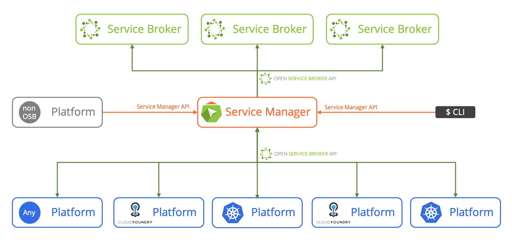

Central management of Open Service Broker API
compatible Service Brokers across Platforms
The Service Manager
Manage Service Brokers across many Platforms
Use the Service Manager as the central registry for service brokers. It distributes broker registrations to Cloud Foundry and Kubernetes clusters and can also serve as a standalone OSBAPI platform.
Apply central Policies on Service Brokers, Service Catalogs, and Service Instances
Manage your policies in one place. Take control of which platform should have access to which brokers, services, plans, instances, ...
Share Service Instances across Platforms
Create a service instance in a Kubernetes cluster and reuse it in Cloud Foundry or in another cluster, or in both ...
 "SAP uses Peripli to manage SAP Cloud Platform services across multiple platforms."
"SAP uses Peripli to manage SAP Cloud Platform services across multiple platforms."- Michael Wintergerst, Senior Vice President SAP Cloud Platform, May 2019
What is the Service Manager?
The Service Manager is a component that manages Open Service Broker API compatible service brokers. It can enforce polices on service brokers, instances and binding and enables cross-platform capabilities such as cross-platform service instance sharing.

The Service Manager is intended for platform and service providers, who manage many platforms or many services. It is designed to cope with huge landscapes, many platforms, many service brokers and service instances but is slim enough to also add value to smaller setups.
The project aims to provide the following features:
-
Service brokers should be registered at the Service Manager. It filters and propagates the registrations and catalogs down to the platforms. It makes sure that end-users only see the services they are entitled to in the marketplaces of the platforms.
-
The Service Manager allows the creation and management of service instances and bindings without a platform such as Cloud Foundry or Kubernetes. It provides a functionality like listing instances and bindings.
The main difference between a service instance directly created by Service Manager and one created, for example, through Cloud Foundry is the responsibility of the lifecycle. The platform that created and “owns” a service instance manages things like asynchronous requests and handles error cases including orphan mitigation. -
Most service brokers provide services to all platforms, regardless of the type of platforms. The Open Service Broker API provides this abstraction with one exception. It still exposes the coordinates of the application that requests a service instance in a platform specific way. For example, for Cloud Foundry this is the organization ID and the space ID and for Kubernetes this the cluster ID and a namespace.
The Service Manager can translate these specific platform coordinates into provider specific coordinates. Service brokers that are only relying on the provider specific coordinates are independent from the platforms and prepared for new types of platforms in the future. -
The Service Manager provides a service broker for itself. With this service broker, applications can create an instance and a binding of the Service Manager. The credentials of the binding can be used to work with the Service Manager REST API mentioned above.
All service instances created by such a Service Manager instance belong together. The Service Manager instance forms the scope of these instances.
This feature can, for example, be used by multi-tenant applications, which need to create service instances per tenant. -
Services instances created in one platform can be reused in another platform. For example, a database instance created for a Cloud Foundry application can be reused in a Kubernetes cluster.
The Service Manager is the central registry for all service instances from all attached platforms and enables the instance sharing across platforms. -
The Service Manager knows about all service instances because it tracks all provisioning and deprovisioning calls. This information may be used by service brokers to, for example, do quota checks. This information might also be necessary to find out which customers actually use a service. For example, in a case of an outage, based on this data the right set of customers can be notified.
-
To enable access from applications to services without a public endpoint, network configuration has to be adapted on the fly and/or a tunnel between the application and the service has to be established. The Service Manager provides the necessary extension points for adding plugins that handle the network configuration.
-
All platform setups are different and there is no simple one-size-fits-all solution. The Service Manager can be extended with plugins to adapt and add more service and broker policies. This allows to implement handling of special instance types and scenarios in the future.
What is the Peripli Project?
The Peripli project addresses the management of many OSBAPI compliant service brokers across multiple platforms.
The Service Manager is the central broker registry and the proxy for all OSBAPI calls from all platforms to all service brokers. It can be extended by plugins, which can apply policies to all OSBAPI related entities like service brokers, service offerings, plans, service instances and service binding and can manipulate or veto OSBAPI requests and responses.
The Service Manager is not tight to any specific platform. Other Peripli components, called Service Broker Proxies, handle
platform specific APIs. The Peripli project currently provides Service Broker Proxies for Kubernetes and Cloud Foundry.
Because of the open APIs, Service Broker Proxies can also be implemented for other (proprietary) platforms.
Additionally, the Peripli project provides a CLI tool to talk to the Service Manager.

The Service Manager is also a complete OSBAPI platform itself that doesn’t need Kubernetes or Cloud Foundry to create and manage service instances and service bindings. Credentials provided by a service binding can be used by other applications which are not hosted on a platform or – in a loosely coupled scenario – can be injected into a Kubernetes cluster as a secret or to Cloud Foundry as a user-provided service instance.
Project Status
The Service Manager is still under development. Some of the planed features are not finished or haven't been started,
yet.
However, the core of the Service Manager is production ready and is already deployed in big cloud infrastructures.
Additional Resources
- The Service Manager API specification can be found here. It’s not fully implemented, yet.
- Service Manager CLI documentation is located here.
- Execution of a flow similar to the one described in the walkthrough can be found here.
- Service Manager Introduction as part of the keynote @ CF Summit Europe 2018 can be found here.
- Service Manager Session @ CF Summit Europe 2018 can be found here.
 Fork on Github
Fork on Github